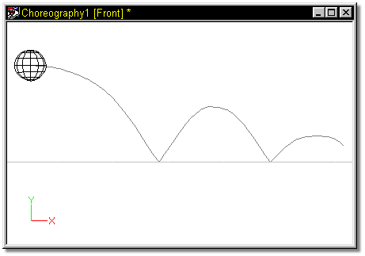

Paths are initially smooth, which is convenient since most objects in life
move along gradually, without abrupt changes in direction. However, you can
change a path to include straight lines and sharp angles. There can be any
combination of straight lines and smooth curves.
Paths are initially smooth, which is convenient since most objects in life
move along gradually, without abrupt changes in direction. However, you can
change a path to include straight lines and sharp angles. There can be any
combination of straight lines and smooth curves.

Some things in life are not continuous. Consider the sharp point in the path that forms where a ball hits the floor and rebounds, called a peak. To create a peak, first select the path by clicking on it, then click the Modeling Mode button on the Mode Toolbar. Select the control point you wish to alter by clicking it, then click the Peak button on the toolbar. To smooth a control point, use the same procedure, but click the Smooth button on the toolbar. The Smooth or Peak buttons on the toolbar show the state of the selected control point.
Related Topics:
About Directing
Naming Paths
Selecting a Path
Add Object to Choreography
Add Object to Path
Magnitude
Bias